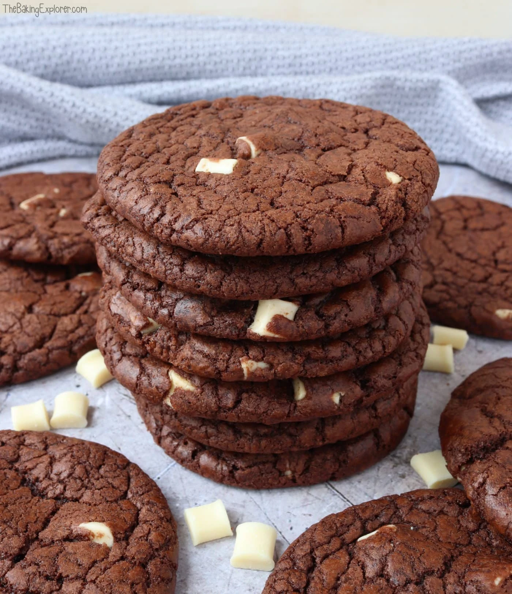

How to create double chocolate cookies!
Bite into a cookie of immense deliciousness! This recipe will guide you to creating a batch of double chocolate chip cookies!

Ingredients needed:
- 150 g Dark chocolate
- 175 g Light brown sugar
- 75 g Butter
- 1 Egg
- 1 tsp Vanilla extract
- 100 g Self raising flour
- 25 g Cocoa powder
- 150 g White chocolate chips
Instructions:
- Pre-heat your oven to 160C Fan/180C/350F/Gas 4, and line baking trays with baking paper.
- Melt the dark chocolate in a glass bowl over a pan of shallow water on a very low heat. Make sure the water does not touch the bowl.
- In a bowl mix together the light brown sugar and butter.
- Add the egg and vanilla extract and mix well.
- Add the self raising flour and cocoa powder and mix in.
- Pour in the melted dark chocolate and mix well
- Add the chocolate chips. then cover the bowl and chill the mixture for 15 minutes in the fridge.
- Scoop the mixture out with a spoon and roll each piece into a ball and flatten it down a little with your hands. Place onto the lined baking trays. Leave space in between them as they will expand when baking.
- Bake for 8-12 minutes. eave them on the tray for at least 5 minutes to harden, then move to a cooling rack.
- Take some of the cookies you baked and enjoy!
Explore the tasty recipies below!